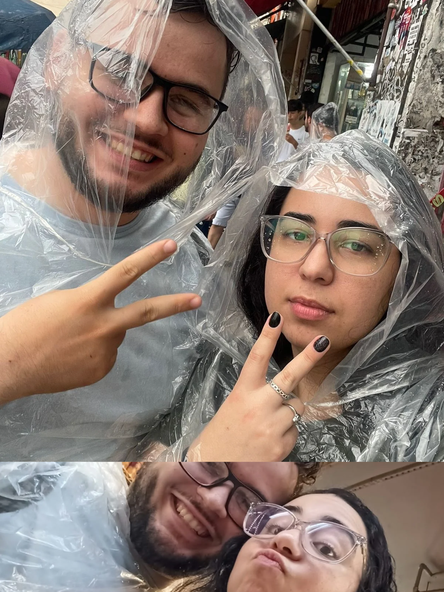
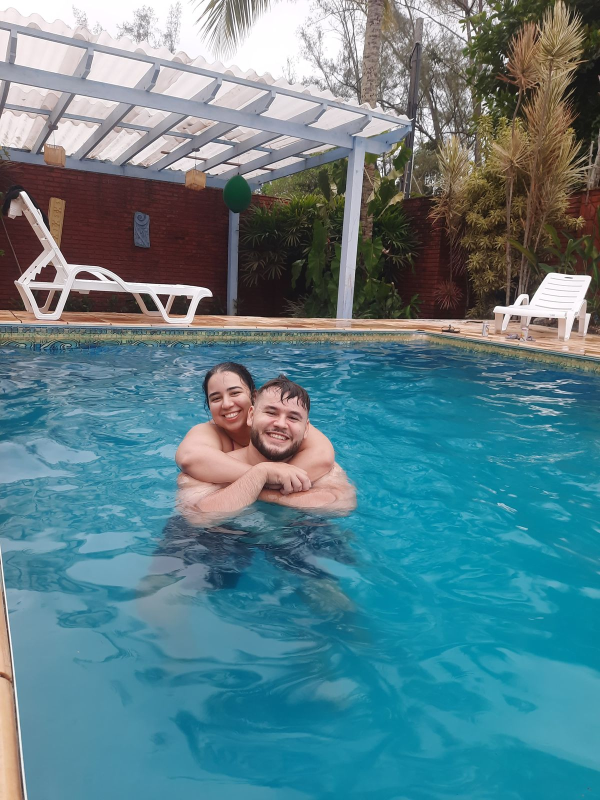
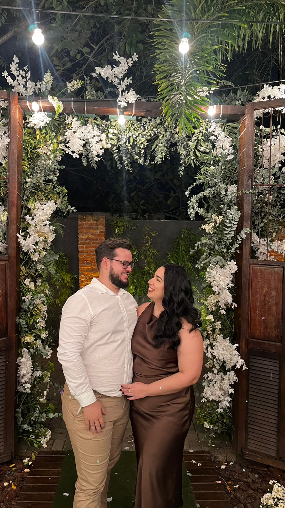

14 • 11 • 2024
O Início de Tudo
O dia em que nossa história oficial começou e tudo ganhou mais cor.
Tudo começou no dia em que fomos comer comida japonesa no genso, e quando nossos olhos se cruzaram ao voce sair da porta do seu predio e entrar no carro e logo em seguida ja me dar um beijo de um jeito que parecia ja se conheciamos e que era mais uma noite de casal, e dias comuns foram se transformando nos melhores momentos da minha vida. Desde aquele instante, cada sorriso seu se tornou o meu lugar favorito no mundo.
Ao seu lado, Suzane, aprendi que o amor mora nos pequenos detalhes: nas conversas sem hora para acabar, nos abraços que acalmam qualquer tempestade e na certeza de que, não importa o que aconteça, temos um ao outro.
Fiz isso aqui apenas como uma pequena lembrança do quanto sou grato por cada dia, hora e segundo que passamos juntos — e por tudo o que ainda vamos viver.
Alguns dos instantes que ficaram guardados para sempre no meu coração.
O dia em que nossa história oficial começou e tudo ganhou mais cor.

Qualquer lugar se torna perfeito quando estou segurando a sua mão.

Olhar para você é ter a certeza de que fiz a melhor escolha da vida.

Se eu tentasse listar tudo o que me encanta em você, faltaria espaço nesta página. Mas existem detalhes seus que iluminam os meus dias de um jeito inexplicável:
Obrigado por dar seu melhor para melhorar e ser minha parceira, minha melhor amiga e o amor da minha vida. Eu te amo muito!
Namorar é igual fazer xixi nas calças, todo mundo consegue ver, mas só você sente o aconchego e o quentinho que vem de dentro.
— Obrigado por ser o xixi da minha calma. Com todo o meu amor, Franklin